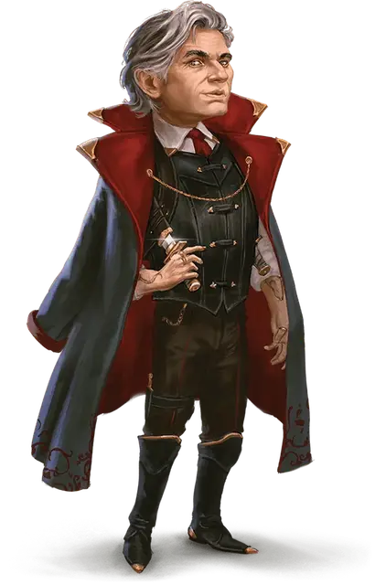

Босс Делюр
Boss Delour
Маленький Монстр, законно-злой, именной НИП

Класс Доспеха 14
Хиты 110 (20к6 + 40)
Скорость 25 футов (30 (в форме крысы или гибрида))
| мод | спас | ||
|---|---|---|---|
| СИЛ | 12 | +1 | +1 |
| ЛОВ | 18 | +4 | +4 |
| ТЕЛ | 15 | +2 | +2 |
| мод | спас | ||
|---|---|---|---|
| ИНТ | 17 | +3 | +3 |
| МДР | 14 | +2 | +2 |
| ХАР | 16 | +3 | +3 |
Навыки Восприятие +10, Ловкость рук +8, Обман +11, Скрытность +8
Чувства тёмное зрение 60 футов, пассивное Восприятие 20
Языки Общий, Воровской жаргон (не может говорить в форме крысы)
Опасность 9 (5000 опыта)
Бонус мастерства +4
Особенности
Увёртливость. Если Делюр попадает под действие эффекта, который позволяет совершить спасбросок Ловкости, чтобы получить половину урона, Делюр не получает урона при успехе и половину урона при провале, при условии что Делюр дееспособен.
Проворство. Делюр может проходить сквозь пространство, занятое существами, чей размер больше его.
Регенерация. Делюр восстанавливает 10 хитов в начале своего хода. Если он получает урон посеребрённым оружием, эта особенность не действует в начале его следующего хода. Делюр умирает только если начинает свой ход с 0 хитов и не может регенерировать.
Действия
Мультиатака. Делюр совершает любую комбинацию из трёх атак Укусом, Коротким мечом или Ручным арбалетом.
Укус (только в облике Крысы или Гибрида). Рукопашная атака оружием: +8 к попаданию, досягаемость 5 футов, одна цель. Попадание: 26 (5к8 + 4) колющего урона. Если цель — гуманоид, она должна преуспеть в спасброске Телосложения Сл 14, иначе станет проклятой ликантропией веркрыс. Будучи проклятым таким образом цель сохраняет своё мировоззрение, языки и снаряжение, но в остальном использует блок характеристик веркрысы [wererat], исключая действия, требующие снаряжения, которого у цели нет. Любой ночью, когда на небе полная луна, цель становится ПМ под контролем Мастера и остается им до конца ночи. Заклинание снятие проклятия [remove curse] или подобная магия снимает это проклятие.
Короткий меч (только в облике Гуманоида или Гибрида). Рукопашная атака оружием: +8 к попаданию, досягаемость 5 футов, одна цель. Попадание: 11 (2к6 + 4) колющего урона плюс 10 (3к6) урона ядом.
Ручной арбалет (только в облике Гуманоида или Гибрида). Дальнобойная атака оружием: +8 к попаданию, дистанция 30/120 футов, одна цель. Попадание: 11 (2к6 + 4) колющего урона плюс 10 (3к6) урона ядом.
Бонусные действия
Смена формы. Делюр превращается в крысу или гибрид крысы и гуманоида или же принять свой истинный облик гуманоида. Вся его статистика, за исключением скорости, остаётся одинаковой во всех обликах. Всё несомое и носимое им снаряжение не превращается. Он принимает свой истинный облик, если умирает.
Хитрое действие. Делюр может совершить действие Рывок, Отход или Засада.
Описание
Веркрыса Делюр - хитрый обманщик и непревзойденный вор, который правит Лунными охотниками вместе со своим другом Августом. Сладкие речи и расчетливый ум Делюра делают его опасным. Он может улыбаться, пожимая кому-то руку, одновременно замышляя погубить этого человека.
Идеей Делюра было расширить деятельность гильдии за пределы воровства. Он изучает другие преступные синдикаты и их методы обогащения. Он считает, что рэкет, контрабанда и поджоги - это низко висящие плоды, а вымогательство, похищение людей и наёмные убийства - более сложные задачи, которые гильдия может решать по мере роста своей силы. Его единственный реальный страх - разоблачение; чем крупнее и активнее становятся Лунные охотники, тем больше вероятность, что они привлекут внимание правоохранительных органов или предприимчивых благодетелей. Горечь от бегства гильдии из ее изначального дома все еще свежа в памяти Делюра.
Действительно, Делюр никогда не забывает оскорблений. Он одержим идеей отомстить чиновникам, которые совершили налёт на здание гильдии и убили Пирита, который был Делюру как брат. Хотя Делюр вполне готов нанести удар в спину большинству людей, он относится к Августу с величайшим уважением. Если он раскроет заговор Августа стать человеком и покинуть Лунных охотников, он сочтет это величайшим предательством.